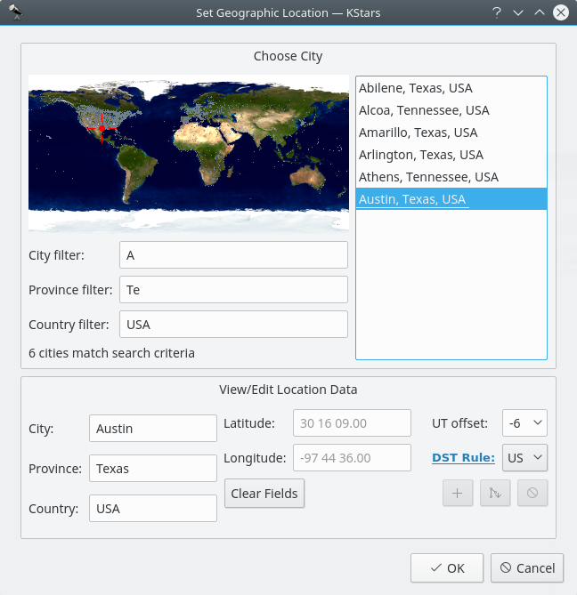

Setting the Geographic Location
Here is a screenshot of the Set Geographic Location window:

There is a list of over 3400 predefined cities available to choose from. You set your location by highlighting a city from this list. Each city is represented in the world map as a small dot, and when a city is highlighted in the list, a red crosshairs appears on its location in the map.
It is not practical to scroll through the full list of 3400 locations, looking for a specific city. To make searches easier, the list can be filtered by entering text in the boxes below the map. For example, in the screenshot, the text A appears in the City Filter box, while Te has been entered in the Province Filter box, and USA is in the Country Filter box. Note that all of the cities displayed in the list have city, province, and country names that begin with the entered filter strings, and that the message below the filter boxes indicates that 6 cities are matched by the filters. Also notice that the dots representing these six cities in the map have been colored white, while the unmatched cities remain gray.
The list can also be filtered by location in the map. Clicking anywhere in the world map will show only those cities within two degrees of the clicked location. At this time, you can search by name, or by location, but not both at once. In other words, when you click on the map, the name filters are ignored, and vice versa.
The longitude, latitude and time zone information for the currently-selected location are displayed in the boxes at the bottom of the window. If you feel that any of these values are inaccurate, you can modify them and press the + (Add City) button to record your custom version of the location. You can also define a completely new location by pressing the Clear Fields button, and entering the data for the new location. Note that all fields except the optional State/Province must be filled before the new location can be added to the list. KStars will automatically load your custom locations for all future sessions. Please note, at this point, the only way to remove a custom location is to remove the appropriate line from the file kstars/mycities.dat in your folder qtpaths --paths GenericDataLocation.
If you add custom locations (or modify existing ones), please send us your mycities.dat file so that we can add your locations to the master list.